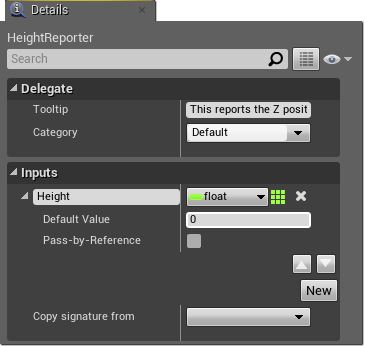

Event Dispatchers
Last edited: 8/9/2017
By binding one or more events to an Event Dispatcher, you can cause all of those events to fire once the Event Dispatcher is called. These events can be bound within a Blueprint Class, but Event Dispatchers also allow events to be fired within the Level Blueprint.
TIP:
This is a super handy tip we show inbetween the text to help you use this thing with a link to more information.
Creating Event Dispatchers
Event Dispatchers are created in the My Blueprint tab of the Blueprint Editor.
To create a new Event Dispatcher:
- In the My Blueprint click the button on the Event Dispatcher category:
- Enter a name for the Event Dispatcher in the name field that appears at the end of the list in the My Blueprint tab.
Setting Properties
By selecting the Event Dispatcher in the My Blueprint tab, you can edit its properties in the Details panel. You can set the tooltip and category for your Event Dispatcher, as well as add inputs.
Adding inputs to your Event Dispatcher allows you to send variables to each event bound to your Event Dispatcher. This allows data flow not only within your Blueprint Class, but also between your Blueprint Class and the Level Blueprint.
The process to add inputs to your Event Dispatcher is similar to the workflow for adding inputs and outputs to functions, custom events, and macros. If you would like to use the same inputs as another event, you can use the Copy Signature from dropdown to indicate the event. To add your own inputs to the Event Dispatcher:
- Click on the New button in the Inputs section of the Details pane.
- Name the new input and set its type using the dropdown menu. In this example, there is a String input parameter named MyStringParam.
- You can also set a default value and indicate whether or not to pass the parameter by reference by expanding the entry for the parameter.

To change the location of the pin for this parameter on the edge of the node, use the up and down arrows in the expanded Details pane entry.
Using Event Dispatchers
Once you have created the Event Dispatcher, you can add event nodes, bind nodes, and unbind nodes linked to it. Although you can Double-click on the Event Dispatcher entry in the My Blueprint tab to open the Event Dispatcher's graph, the graph is locked and you cannot modify the Event Dispatcher directly. The bind, unbind, and assign methods all allow you to add events to the Event Dispatcher's event list, while the call method activates all the events stored in the event list.
All of the nodes described below can be added in both the Blueprint Class and the Level Blueprint. Except for the Event node, each node has a Target input pin:
- In the Blueprint Class, this pin is automatically set to Self. This means that the event list is changed for the class, so every instance of the class will be changed.
- In the Level Blueprint, this pin must be connected to a reference to an instance of the class in the level. This means that the event list will only be changed for that particular instance of the class. The Level Blueprint documentation explains how to create any Actor references you might need.